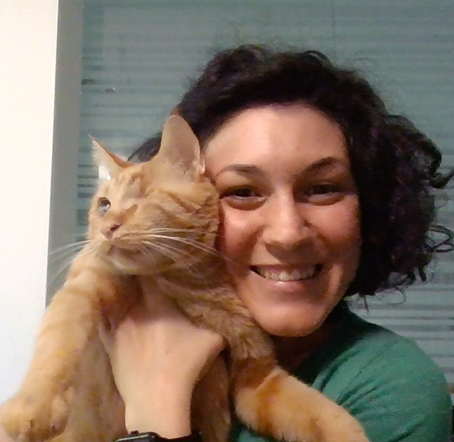

Knowledgeable and dedicated 4-language customer service professional with 10 years' experience gained in various industry fields: IT, retail, furniture, plastics (medical waste containers) and insurance. Excited about participating to international trade fairs and experienced in offering training to customers abroad (recent travels: UK, Morocco, Holland, Kuwait). Lifelong learner, eager to enhance personal and professional growth to always offer the best quality performance and contribute to company's success and customers' satisfaction. Available for full-time work, willing to travel.
